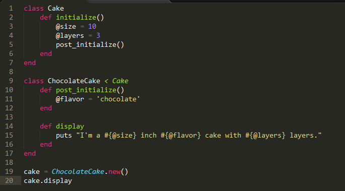
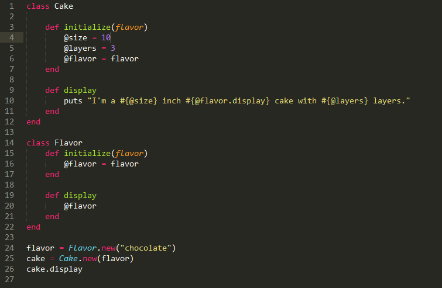

Inheritance and composition are both design techniques to share behavior between different classes. Inheritance models objects in an "is-a" way. Super classes pass their behavior on to sub classes that can be seen as versions or extensions of their super class.
Composition reverses the structure of inheritence. It models objects in a "has-a" way. Larger objects are composed by small objects that have single responsibilities.
In both of the above cases, the sentence "I'm a 10 inch chocolate cake with 3 layers" will print to terminal. However, in each example the characteristics are gained in a different way. Whereas the first example shows ChocolateCake inheriting size and layers from Cake, the second demonstrates Cake being composed in part by the flavor attribute from the Flavor class.
"Favor composition over inheritance," a widely accepted dictum from Design Patterns suggests that composition should be used in place of inheritance in most cases. While inheritance is extremely powerful, allowing the extension of a super class' behavior almost ad infinitum, its power becomes a weakness when poorly designed. A sub class that doesn't rightly have an "is-a" relationship with its super class will begin inheriting bad behavior, which will then ripple through any sub classes they may have and any othe classes they interact with.
Composition, on the other hand, does not depend on a heirarchy of classes. Although it may require more code, its small, well-defined objects can easily be plugged and unplugged from larger objects, making it highly versatile.